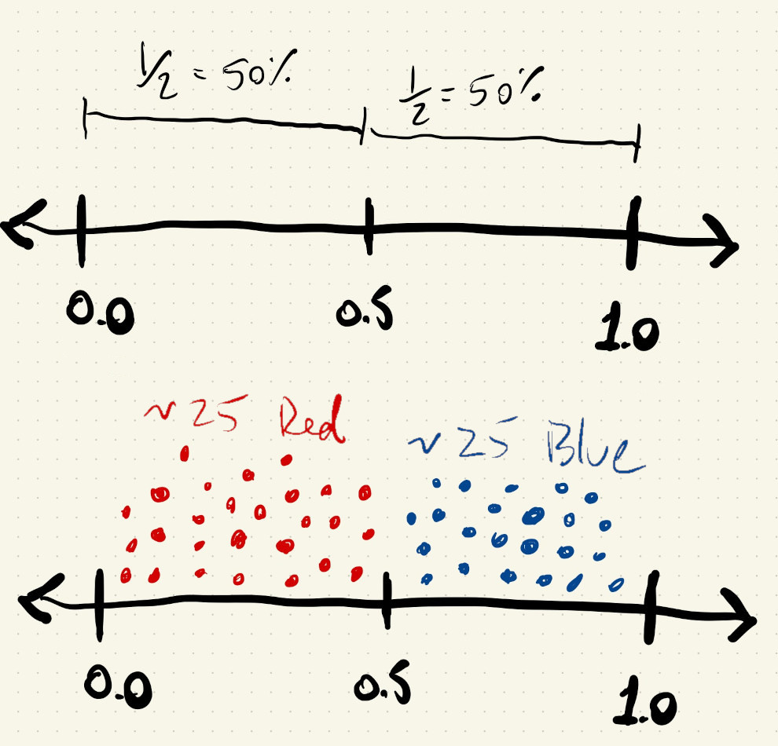
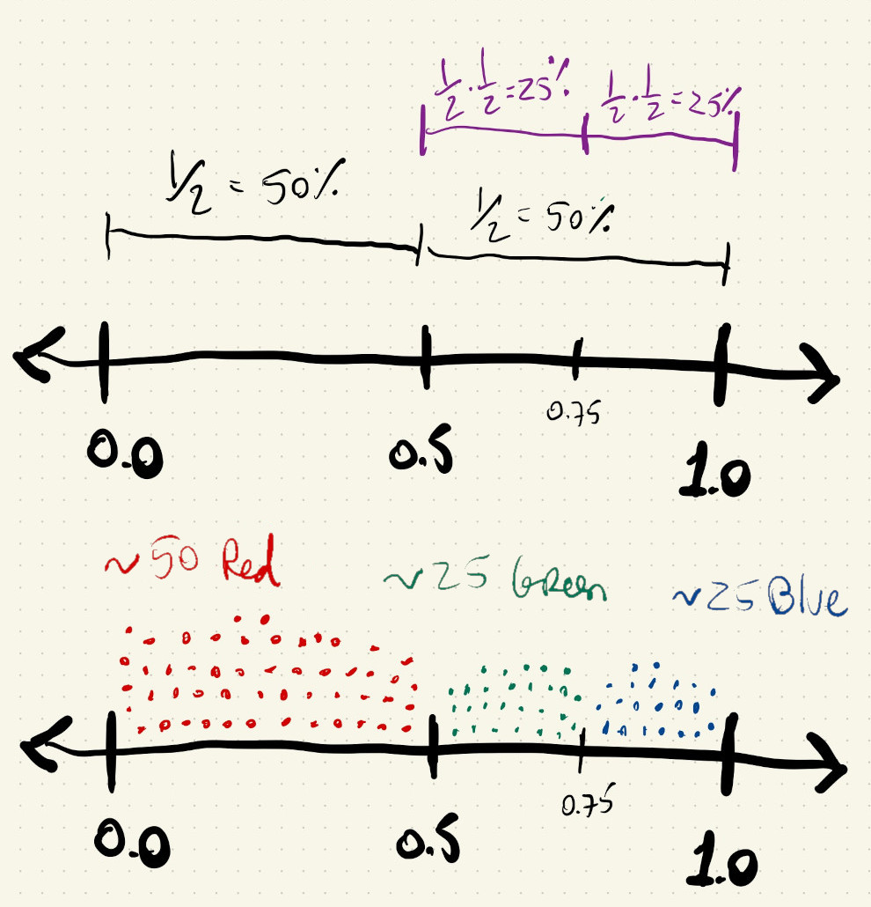
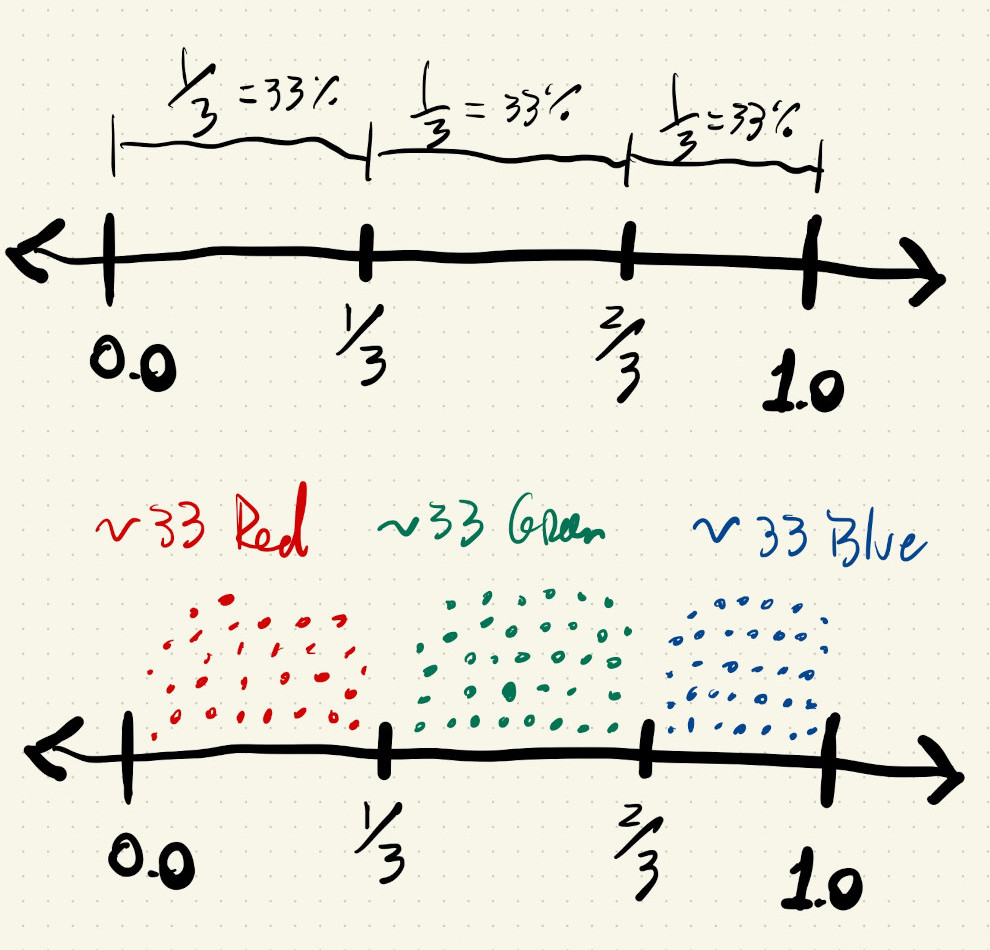
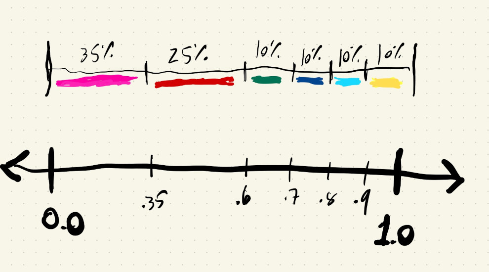

Now that we’ve seen how to draw patterns on our canvas using for() loops and how to create our own functions, let’s see how to use one of the built-in functions from p5.js to make our patterns more interesting.
Let’s start with a simple grid of circles.
Note the use of a variable to set the circle diameter:
One way to add variability to our pattern would be to pick a slightly different value for the diameter or the color of each of our circles.
Let’s start with color. We are going to see how we can use random() to select a value from a pre-determined set of options for the color of our ellipses.
For example, let’s say we want half of them to be black and the other half to be white, but we don’t want all the black ones in a row, and then the white ones, because that would look like a chessboard and it’s boring.
We want them to be mixed and shuffled.
We could use random(0, 255) to pick a random grayscale value between \(0\) and \(255\) to fill each circle:
Hmmmm…. there is an issue with this: we are not drawing black and white circles. All the values between \(0\) and \(255\) are equally likely to occur!
There are a few ways to fix this, but let’s start by using the random() function to give us a number between \(0\) and \(1.0\). Since all the values between \(0\) and \(1.0\) are equally likely to occur, about half of the numbers will be less than \(0.5\) and the other half will be greater than \(0.5\).
If we image a number line and \(50\) random points along that line, about \(25\) of them will be less than \(0.5\) and the rest will be greater than \(0.5\):

Putting this in pseudo-code, our logic could be:
aRandomNumber = random()
if aRandomNumber < 0.5: draw a white circle
if aRandomNumber > 0.5: draw a black circle
Since the two choices are mutually exclusive (they can’t both happen at the same time), we can use an else statement and turn this into the following JavaScript:
if(random() < 0.5) {
fill(255);
} else {
fill(0);
}
Cool ! What if want to use \(3\) colors now? Like some gold, blue and white circles?
We could do something similar:
Draw a number, if it’s less than half, draw a black circle, otherwise, draw another number and repeat the process to pick between gold and blue. This works, but what do we notice about the frequency of the three colors?
Gold and blue circles happen with similar frequency, but it seems like there are more black circles. Twice as many black circles, actually. In this code we were asking p5.js to draw black circles half of the time, and then to split the remaining half again in half, so blue and gold only happen \(25\%\) of the time each.
We implemented something like this:

What if we draw a random number between \(0\) and \(1\) and save it in a variable. Now we can use this number multiple times in multiple if() statements and check if it falls between certain ranges. If we want something to happen about one-third of the time, that’s the same as asking if the random number is less than \(0.3333\), because of all the numbers between \(0\) and \(1\) one-third of them are less than \(0.3333\).
We’re now implementing something like this:

The logic for black can be:
if aRandomNumer < 0.333: draw black
If the number is greater than \(0.3333\) we can now just check if it’s also less than \(0.6666\). Doing this after we checked that it’s greater than \(0.3333\) guarantees that our random number is between \(0.3333\) and \(0.6666\), an interval that accounts for another third of the numbers between \(0\) and \(1\).
The logic for black and gold:
if aRandomNumer < 0.333: draw black
else if aRandomNumer < 0.666: draw gold
And if the number is not less than \(0.6666\) we get the other third of the numbers between \(0\) and \(1\) (all the ones between \(0.6666\) and \(1.0\)):
if aRandomNumer < 0.333: draw black
else if aRandomNumer < 0.666: draw gold
else: draw blue
In code:
Hooray. Much better.
We’re calling this a lottery method of picking random numbers because any time there’s a choice to be made we’re picking one option from a set of possibilities. We’re not using the continuous value that the random() function returns, but are using it to draw from a discrete set of options.
Doing a lottery selection like this is a bit cumbersome, but it gives us a way to precisely control how often something happens. If we want to have different events happen with different probabilities we can just change the values we check inside our if/else-if/else logic.
Let’s say we want to use six colors: black, white, gold, blue, green, grey and we want black one-third of the time, white one-quarter of the time and the other colors one-tenth of the time. To work with values that add up to \(100\%\) let’s use black: \(35\%\), white: \(25\%\), and \(10\%\) for all others:
Something like this:

Our logic could be something like:
aRandomNumber = random()
if aRandomNumber < 0.35: draw black
else if aRandomNumber < 0.60: draw white
else if aRandomNumber < 0.70: draw gold
else if aRandomNumber < 0.80: draw blue
else if aRandomNumber < 0.90: draw green
else: draw grey
The thresholds we check against are accumulating. When we are checking for black, we already know that it’s greater than \(0.35\), and we only check if it’s less than \(0.6\) because numbers between \(0.35\) and \(0.60\) account for \(25\%\) of all the numbers between \(0.0\) and \(1.0\).
In code, the above logic becomes:
Can we use something like this to pick different shapes or different sizes from a set of pre-determined options ?
The process is similar, but now we’ll have another random number and another block of if/else statements to select the size.
Let’s go back to just \(3\) colors with equal probabilities:
Now we’ll add this logic to select the size of the ellipse:
aRandomNumber = random()
if aRandomNumber < 0.25: draw big
else if aRandomNumber < 0.5: draw medium
else if aRandomNumber < 0.75: draw small
else: draw extra-small
And we’ll use a variable called maxDiam to keep track of the maximum diameter of our ellipses, so we don’t have to fix the spacing we are using in the for loops.
We can use the same idea to slightly vary the x and y locations of our ellipses.
After we choose a diameter, we can use another if/else statement to pick the direction we want to move our ellipse:
aRandomNumber = random()
if aRandomNumber < 0.25: move left
else if aRandomNumber < 0.5: move right
else if aRandomNumber < 0.75: move up
else: move down
We’ll use an extra variable called dValue to calculate how far we want to move the ellipses, and variables called dx and dy to keep track of which direction to change.
This calculation makes the smaller ellipses move further, and larger ellipses move less:
let dValue = (maxDiam - eDiam) / 2;
And in code:
What’s useful about this is that we now have a way to create non-regular patterns that don’t really look like patterns. The for loops are still there, so in the background of our logic we have a grid, but visually it doens’t necessarily look like a grid.
We’ve been using the values from the random() function to choose between a set of pre-defined options because in some cases it’s nice to add random variation while maintaining some control over the results.
For example, a sketch that picks completely random colors for each ellipse will most likely pick a bunch of unpalatable colors. The way to pick a completely random color is to draw \(3\) random numbers between \(0\) and \(255\) and use them as red, green and blue values for our fill color:
let redRandom = random(0, 255);
let greenRandom = random(0, 255);
let blueRandom = random(0, 255);
fill(redRandom, greenRandom, blueRandom);
But, maybe uniformly distributed continuous values can be used for the ellipses’s diameter and position variations.
This will pick a random diameter between \(4\) and \(40\) when maxDiam is \(40\):
eDiam = random(maxDiam / 4, maxDiam);
And this will add random variations in both the x and y directions, based on the value of the ellipse’s diameter. The difference is that now ANY number between -dValue and dValue is possible:
let dValue = (maxDiam - eDiam) / 2;
let dx = random(-dValue, dValue);
let dy = random(-dValue, dValue);
This looks pretty cool. Our underlying grid is almost unnoticeable.
And combining random positions and size: